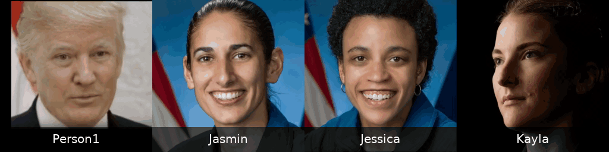
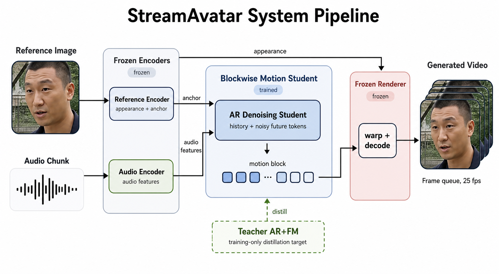
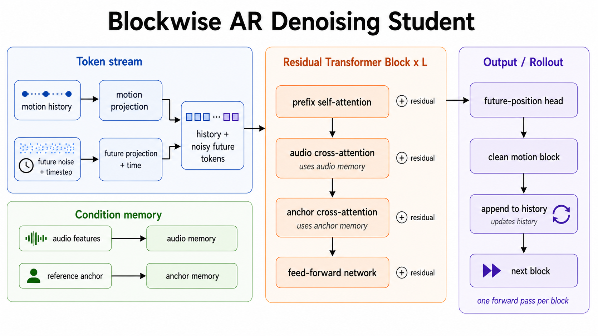
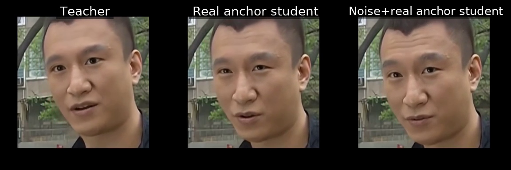

Demo
The current release is an offline Gradio demo with a streaming-capable blockwise motion design. This strip shows four reference portraits driven by the same sample audio.

Method
StreamAvatar keeps DyStream's pretrained audio encoder and renderer, then distills the expensive autoregressive flow-matching motion rollout into a blockwise AROD student.


Results
The real-anchor student is the primary released model. Mixed/noise-anchor training is reported as an ablation because it can change visible motion strength and long-horizon consistency, but does not consistently improve lip-sync metrics.
Fresh verification speedup
Motion-only AROD rollout was roughly eight times faster than the DyStream teacher in the latest 60-second verification run.
Observed peak setup
The same verification setup has reached about ten times faster motion rollout under earlier runs.
Public checkpoint
The released AROD real-anchor checkpoint is hosted on Hugging Face with a Google Drive mirror.

Reproduce
Clone the repository, install dependencies, download the model assets, and launch the Gradio demo.
git clone https://github.com/CXP-2024/StreamAvatar.git cd StreamAvatar python -m venv .venv source .venv/bin/activate pip install -r requirements.txt bash scripts/download_assets.sh bash run.sh